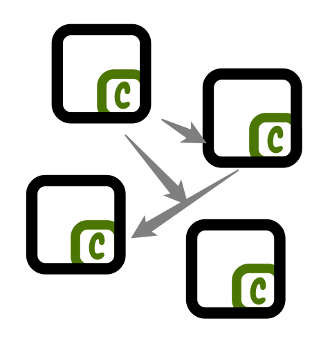

P2P for Servers

Agenda
- Patterns
- The Tool
- Use Cases
Why?

DB
- Persistent
- Relatively slow
Cache
- Quite fast
- Data loss is norm
Source Code
- Zero-cost
- Reliable
- Read-only
Source Code
Source code can contain data:
- Gender options
- Shop products
- Game content
- Site news
Source Code
- May have editable data
- CI/CD
- 3-5 🕴
Takeaway
Source code is your DB until you have > 5 users.

DB? Cache? Code?
Currency Rates
(updated daily)
DB? Cache? Code?
Categories

Categories


Thats It!


Hashes+Hardlinks
- Save disk space
- Save bandwidth


ciruela sync \ --append ./local1:/dir1/v1.0.0 \ --replace ./local2:/dir2/current \ cluster1.org cluster2.org
Security Warning
- TLS is on to do list
- Use behind firewall
Use Cases
‥ and to do's
Always Available
‥ and dynamic
- Site categories
- Currency rates
- Feature flags
Always Available
with open("/sync/cur/data.json") as f: return json.load(f)
no network calls on start of app
Cheap to Check
dir = Path("/sync/cur") if dir.stat().st_ctime != old_time: return cache
Push New Data
with tempfile.TemporaryDirectory() as d: with open(d.name+'/data.json', 'w') s f: json.dump(data, f) subprocess.check_call([ 'cirula', 'sync', '--replace', d.name+':/sync/cur', 'entry-point.example.org'])
Refreshable Things
- Configs
- Translations
- Game content
‥. removing file works!
🕺 Edit on 100 Servers
ciruela edit \ -d /sync/cur -f /data.json \ cluster1.org cluster2.org
Basic Things
- Container Images
- Static Sites
- Container Cache for Vagga
🕺 Debian Repository
- Only download index
- Upload new index + .deb
- Atomically replace
Container Audit
- Download index directly from cluster
- Check
- Remember hash
🕺 Transactional FS
- Mount via fuse
- Download files on access
- Sync back on unmount
Python Lab
TODO
Questions
Presentation
 Documentation
Documentation